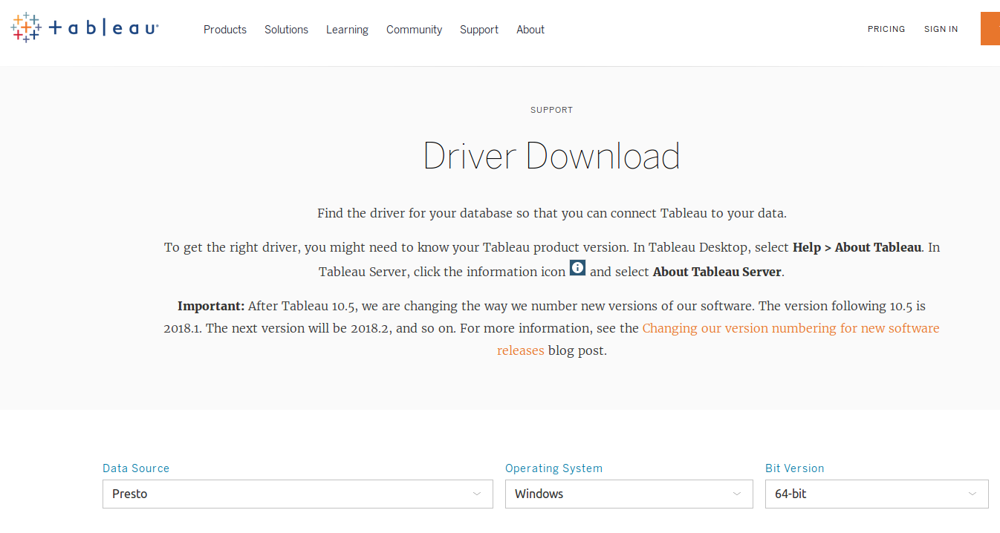
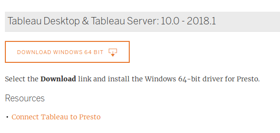
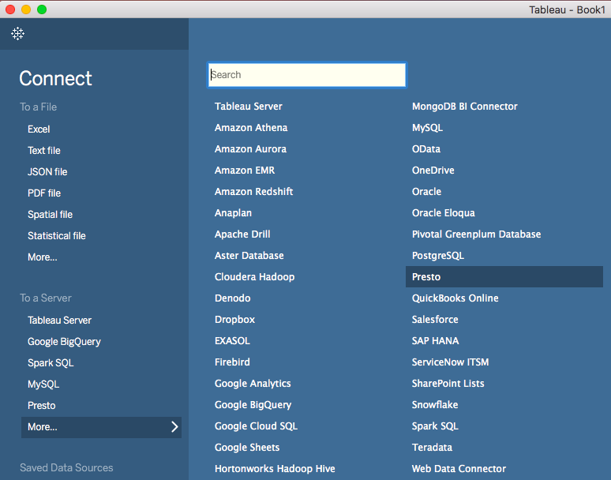
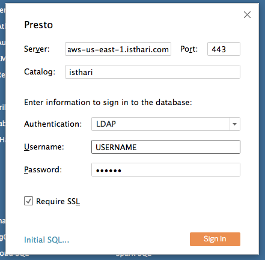
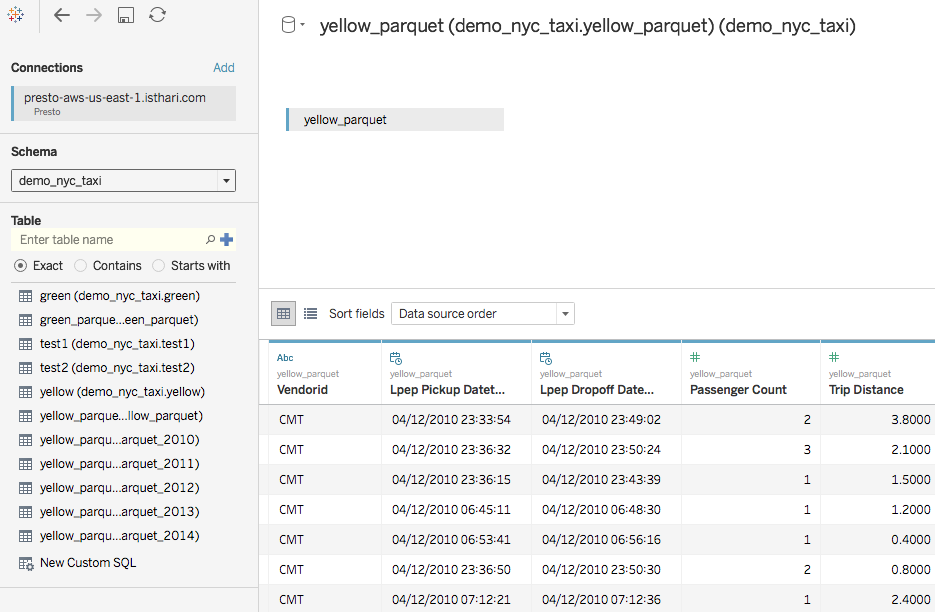

Tableau
This article show you how to connect your existing Tableau to your cloud account
First you must download and install the Official Presto Tableau Driver https://www.tableau.com/support/drivers
Select Data Source: “Presto”
Choose your Operating System and Bit Version

Download and install your driver

Once installed open Tableau Desktop
Select Presto data source type from the menu

Configure the server to connect to. It’ll depend on the cloud provider and region of your account.
To get the server for your environment you must contact your Administrator
Port: 443
Contact your account administrator to get the Catalog of your Company
Select Authentication: LDAP
Introduce your username and password
Check Require SSL
Click Sign In

Now select the schema and table as usual with Tableau and start working !!!
